NASA Space Apps Challenge 2026 · Dancing with the SARs
NISAR Change Explorer
Find radar changes → check them against optical images and records → export the results when needed
- Interactive map: click any cell for its radar history
- Radar compared with optical images and official records
- Time series of up to 10 NISAR passes
- Water, farmland, fire and a mountain landslide
- Open, reusable workflow
Team Space NUTS, Perth
Qing Ding (team owner) and Will Shu
Live app: https://ding77777.github.io/nisar-change-explorer/
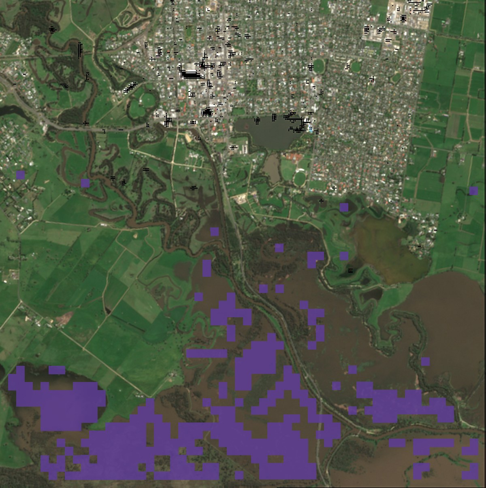
The product
From a radar change to an exportable result in four steps
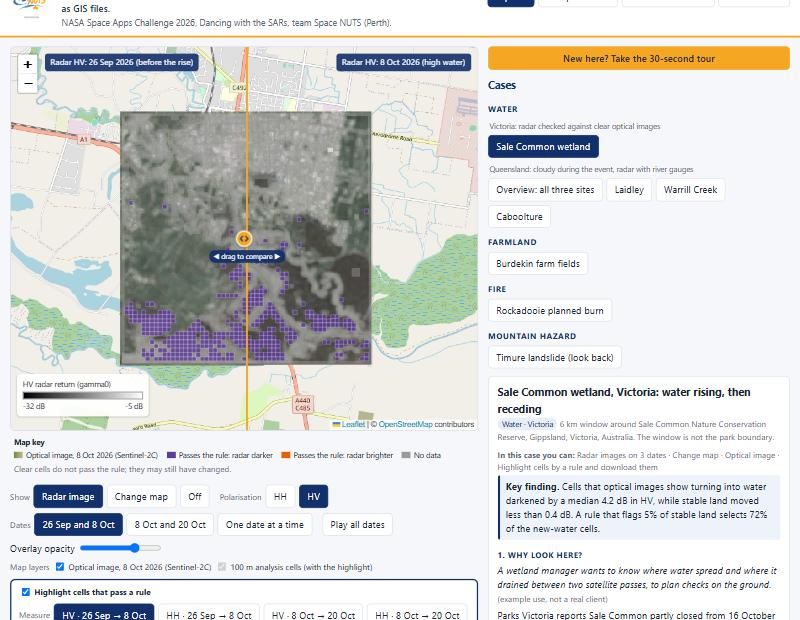
1 2 3- Choose dates and a rule. HH or HV, the period, darker or brighter, and a threshold, to see which polarisation shows the change best.
- See the cells that pass. Highlighted on the map; click a point, field or cell and the app draws its HH/HV curve automatically.
- Check the evidence. Compare the radar result with optical images, river gauges or official records in the same panel.
- Export (optional). Download the passing cells as GeoJSON for further analysis or decisions.
Reusable and open: each case is one config file; new NISAR data go through the same steps.
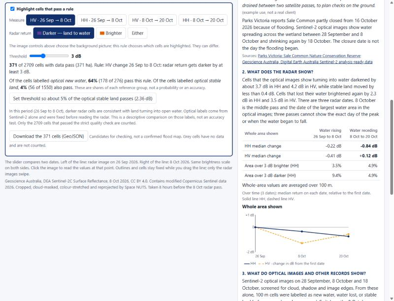
4Water · Sale Common wetland, Victoria
Radar-selected cells match independent optical water labels
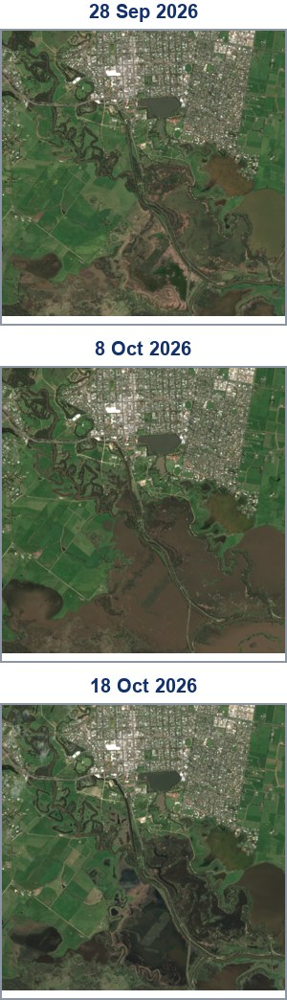
Rule: 26 Sep → 8 Oct, HV darker by at least 3 dB
Median change on the new-water cells: HV −4.2 dB, HH −3.6 dB. Where water receded (8 → 20 Oct), HV rose 3.5 dB.
Shares within optical reference groups, not a flood-detection accuracy for the whole wetland. 2,709 cells passed a strict quality check.
Farmland · Burdekin, Queensland
Same fields, different polarisations, different responses
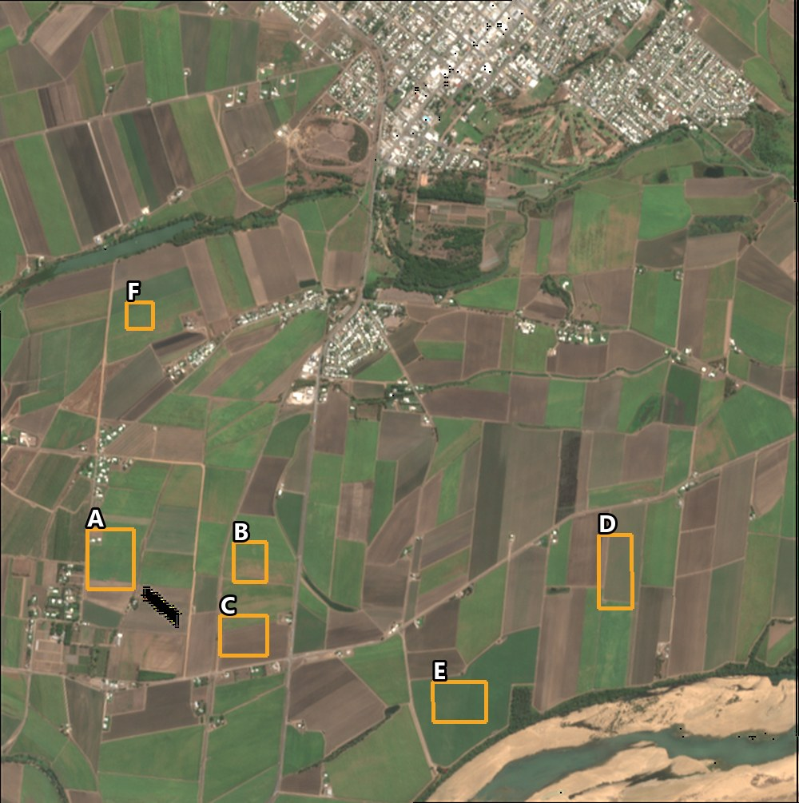
20 Jun → 19 Aug 2026, median change per field (centre line = no change)
HH HV, dB, one scale. Field F has only one complete 100 m cell and is excluded.
- C: greenness and radar fell together; HV fell more than HH and stayed low on five later passes.
- D: greenness rose and both radar channels brightened.
- A: little change from June to August.
- B, E: greenness and radar did not move together (B: greenness fell, radar rose slightly; E: greenness rose, HV stayed flat). Such differences are worth checking with dates, quality and field records.
Response size, not a test of which polarisation detects crops best. NDVI has no unit; radar in dB.
Fire · Rockadooie prescribed burn, New South Wales
Radar brightening inside the official burn boundary stands out, and optical images agree
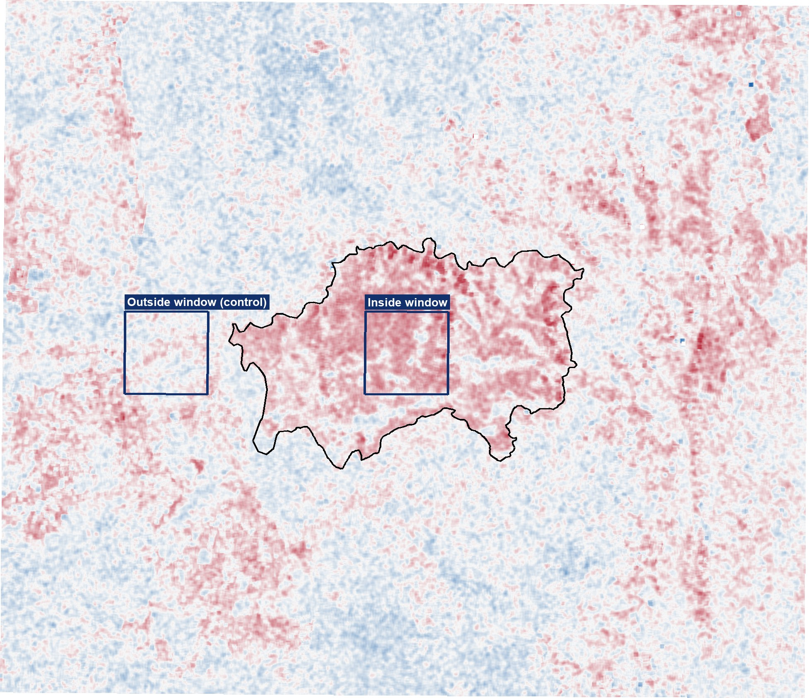
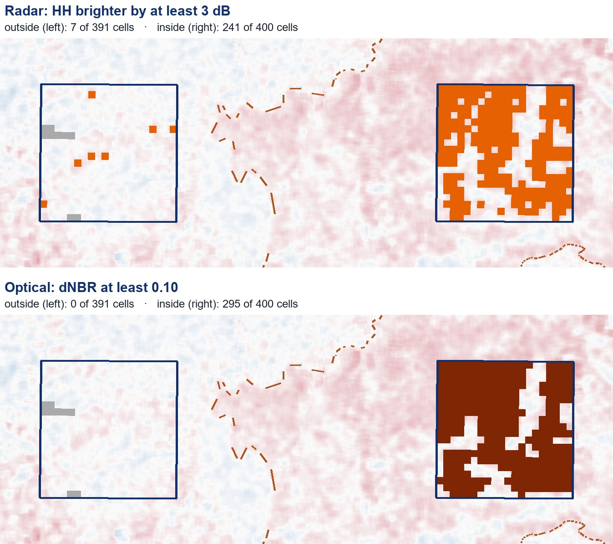
dNBR is the drop in the Normalised Burn Ratio, (NIR − SWIR) / (NIR + SWIR), from before to after the burn, computed from Sentinel-2.
Use: compare the official record with radar and optical responses to pick places for a post-burn check.
Left map: relative to the window median. Cards: raw median change. Not an isolated fire effect or a completion rate.
How it is built
From real NISAR data to results anyone can check
1. NISAR data
L2 GCOV, HH and HV, small windows from ASF; up to 10 passes per case (Timure, shown).
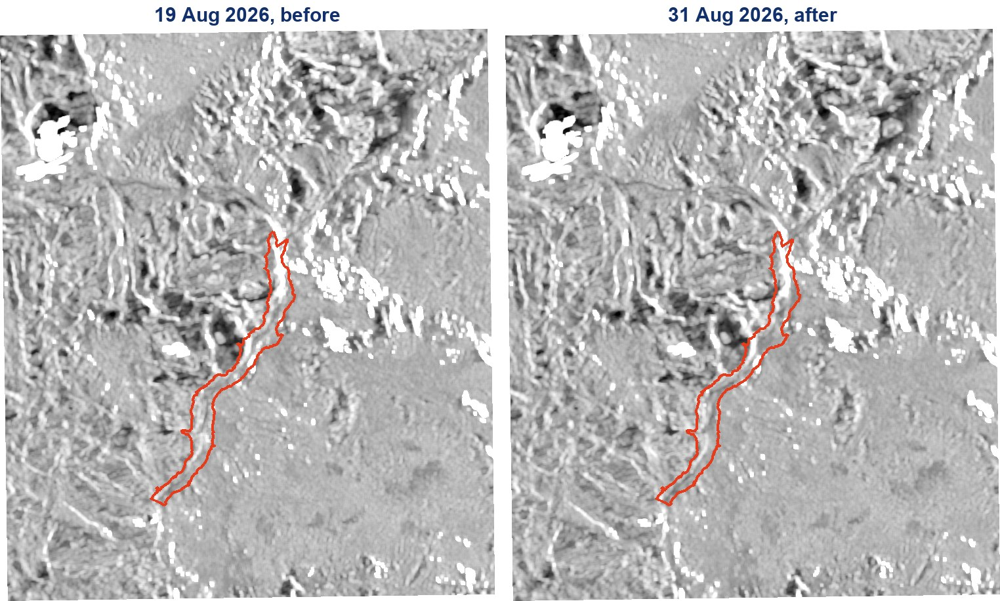
2. Quality and change
Pixels valid on every date; linear power averaged, converted to dB once; 3 to 10 dates per case.
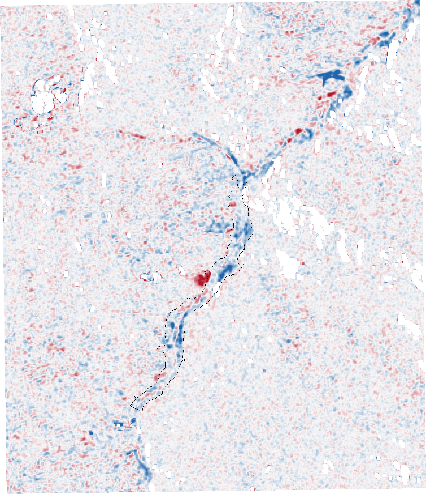
3. Independent evidence
Sentinel-2 labels, river gauges, official burn boundary, Copernicus emergency map.
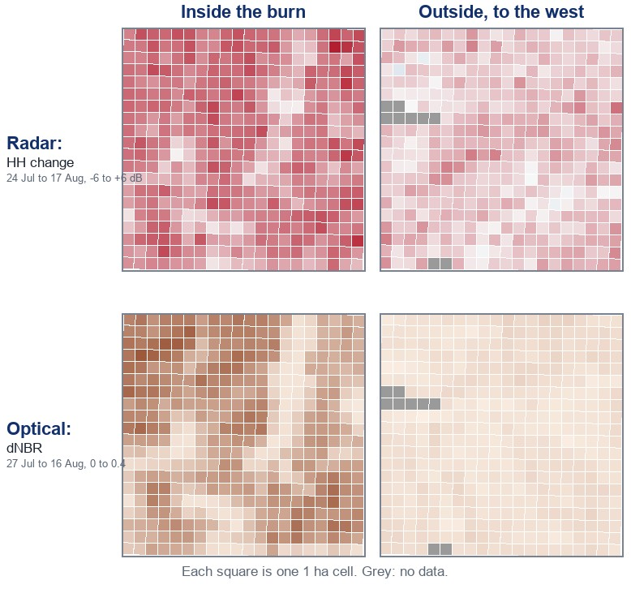
4. Interactive results
Click a cell or point: its HH/HV curve and readings appear. Rule-based highlight and GeoJSON export.
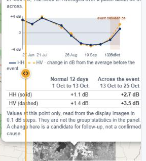
- Click any location with valid data, or any cell or field, and the app draws its HH/HV curve and readings automatically (point readings are approximate).
- The rule, the counts on the page and the exported file always match; the app reproduces the team's offline Sale evaluation exactly.
- A static web app: no server, no login, opens in any browser; each case is one config file built by an open Python workflow.
Mountain hazard · Timure, Nepal: 10 radar dates show strong change across the 26 Aug landslide inside the Copernicus-mapped impact (15.7% of cells vs 1.2% after). Where data quality did not support it, we did not report ground movement.
NISAR Change Explorer
Look at the change. Check the evidence. Export the result.
Change screening and evidence comparison for eight cases (water, farmland, fire, mountain hazard), with GIS export where cell or field layers exist.
Candidates for checking, not validated hazard boundaries and not a warning system. NISAR revisits every 12 days.
Test the candidates against field and farm records; test with decision makers, GIS users and data scientists; apply NISAR to more places; and use longer records to study whether slower changes appear before events like Timure.
Live app: https://ding77777.github.io/nisar-change-explorer/ · Code and methods: https://github.com/DING77777/nisar-change-explorer
Data: NISAR L2 GCOV (NASA-ISRO, ASF DAAC). Sentinel-2 via Digital Earth Australia (Geoscience Australia, CC BY 4.0; contains modified Copernicus Sentinel data 2026). Copernicus EMS EMSR927 (© European Union). NSW NPWS fire history. Queensland Water Monitoring. OpenStreetMap contributors.
7 / 7